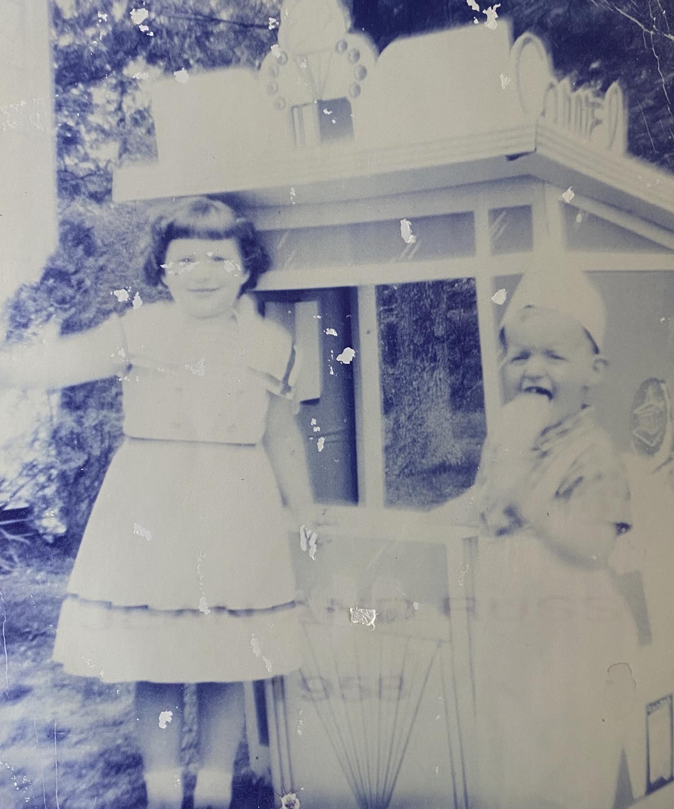

Old-Fashioned Vanilla
The one that started it all. Pure Madagascar bean.
Ocean County, New Jersey · Est. 1955
It started with one little stand, a family recipe, and a scoop that stopped folks in their tracks. Seventy years later, we still churn it by hand — the old fashioned way.
In 1955, Rich and June Gutwein opened one of the very first Carvel stands in Ocean County, on Route 37 East and King Street in Toms River. Ten years and countless summers later, they invented a chocolate-coated ice cream bar so beloved the neighborhood named it themselves — the Richie Bar. That was the day they dropped the franchise and became, simply, Rich's.

Rich & June Gutwein open one of Ocean County's first Carvel stores at Route 37 East & King Street in Toms River.
After a decade of scooping, the family invents its famous chocolate-dipped bar. Customers loved it so much they gave it his name.
With a signature all our own, the family drops the franchise and proudly opens as Rich's Ice Cream — homemade, and independent.
Grandson Hunter Gutwein keeps the tradition alive across our shore locations — still churning by hand from the recipes handed down since day one.
Top-quality cream and simple, honest ingredients — no shortcuts, the way June made it.
Small batches, churned in-house from our original family recipes. The old fashioned way.
Three generations of Gutweins behind the counter, and neighbors we've scooped for since 1955.
A boardwalk-summer institution. Generations of Ocean County families grew up on our cones.
Dozens of hand-made flavors rotate through our cases — from the classics June churned in 1955 to seasonal favorites you'll only find at the shore. Here's a taste of the case.
The one that started it all. Pure Madagascar bean.
Deep, dark, and dangerously rich.
Ribboned with real crushed berries.
Buttery, salty, toasted-nut heaven.
Cool mint packed with chocolate flakes.
Sweet cream loaded with cookie crumble.
A Jersey Shore must — tart and jammy.
Bold cold-brew swirl for the grown-ups.
Roasted, salted, unmistakably real.
Buttery caramel with a flake of sea salt.
A swirl of blue & pink — pure boardwalk.
Old-school banana, perfect in a split.
Flavors rotate by season & location — ask what we scooped fresh today.
Thick hand-made ice cream on a stick, hand-dipped in a snappy chocolate shell that cracks when you bite it. It's the bar that convinced the Gutweins to strike out on their own in 1965 — and the reason folks have been driving down to the shore for it ever since.
Sixty years later, we still dip every one by hand.
Come Get OneEverything off the old-fashioned soda fountain, made to order at the counter.
House-made hot fudge over hand-dipped scoops, whipped cream & a cherry.
Thick enough to stand a spoon in. Any flavor in the case.
Three scoops, three toppings, the whole classic works.
Pressed fresh on the griddle — you can smell them from the parking lot.
A scoop, a splash of syrup, and fizz. An old fountain favorite.
No-sugar-added scoops and bright fruit sherbets, too.
Birthdays, graduations, communions, retirements — for seventy years, a Rich's ice cream cake has been the sweet finish to Ocean County's biggest days. Layers of your favorite hand-made flavors, crunch, and fresh whipped icing, decorated for the occasion.
“Sixty-five years later, we keep the tradition alive — supplying our neighbors the best quality homemade ice cream, made from recipes handed down through the generations.”
— The Gutwein Family
Open seven days a week, spring through fall. Swing by for a scoop.
344 US Highway 9
Lanoka Harbor, NJ 08734
1801 NJ-37 E.
Toms River, NJ 08753
35 South Union Ave
Manahawkin, NJ 08050